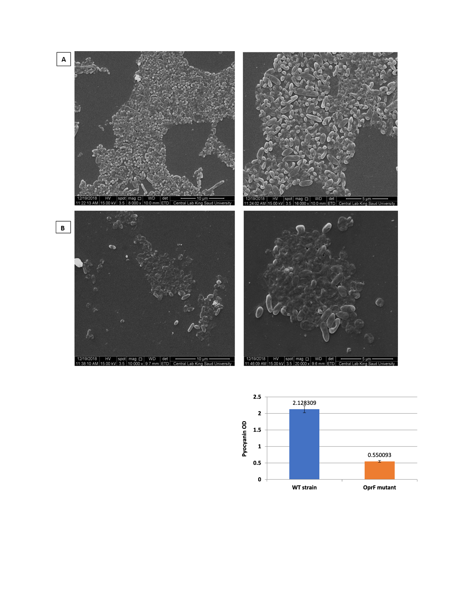

S.I. Bukhari, F.S. Aleanizy / Saudi Pharmaceutical Journal 28 (2020) 196–200
199
Fig. 4. SEM images at different magnification for (A) P. aeruginosa PAO1 wild type, and (B) P. aeruginosa OprF mutant detecting biofilm and cells attachment.
hypothesized that OprF is involved in cellular adhesion and/or pro-
duction of virulence-related factors and the study results showed
that the decreased toxicity of the oprF mutant is at least partially
due to its lowered ability to adhere to cells. This confirms the role
of OprF as a cellular adhesin (Fito-Boncompte et al., 2011). On the
other hand biofilm production was not studied or associated to the
OprF porin which in this study was directly investigated and our
results showed significant reduction in the biofilm formation and
these results were supported by SEM images that showed detached
in colonizing niche in absence of OprF. SEM images showed the
morphology of P. aeruginosa PAO1 wild bacterial cells and their
adhesion to each other in a steady niche and intese biofilm in con-
trast to the OprF mutant were irregular niche biofilm and detached
cells were noticed. This may attributed not only to reduced biofilm
production in OprF mutants but also to the altered biofilm compo-
nent which is a future item to be investigated.
The bacterial culture supernatants were also investigated for
the presence of major virulence factors, namely, pyocyanin. Altered
pyocyanin production by OprF mutant (Fig. 5). Our result comes in
agreement with the reduced virulence phenotype of the oprF
mutant from previous study (Fito-Boncompte et al., 2011). Inacti-
vation of OprF strongly affected all these virulence factors and
Fig. 5. OprF mutant strains showing altered pyocyanin production. Compared to
the relative amounts of pyocyanin extracted from strain P. aeruginosa PAO1 after
the bacteria were grown in LB broth. Experiments were repeated three times and
pyocyanin measurements at OD520 was obtained using microplate reader and
normalized to cell growth measured as OD600.
revealed vital role in the observed phenotypes. This could be due
to the lack of OprF can change the OM composition on the cell sur-
face, transporting a stress signal, which sequentially could be